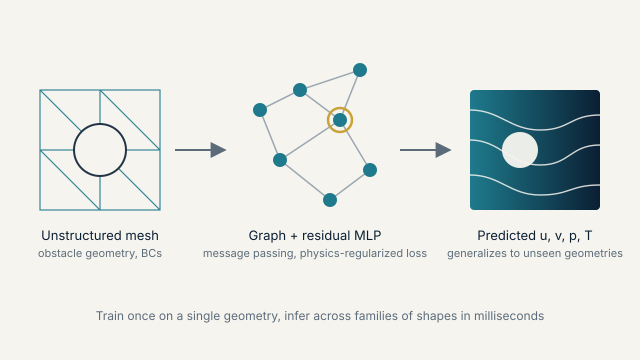

Thrust 1
Geometry-aware, physics-regularized graph learning for thermal-fluid systems
I design graph neural network surrogates that operate directly on unstructured CFD meshes. The residual multilayer-perceptron graph convolutional network (ResMLP-GCN) published in Physics of Fluids (2025) predicts coupled velocity, pressure, and temperature fields for heat transfer and fluid flow problems with strong accuracy over the training range. The follow-on physics-regularized graph surrogate, now under review at the Journal of Computational Physics, is trained on a single geometry and still predicts flow fields on families of unseen obstacle shapes, which is the property needed for geometry optimization and rapid design screening.
- Physics of Fluids 37, 107138 (2025)
- Presented at WCCM-ECCOMAS 2026 (Munich) and ASME IMECE 2025 (Memphis)